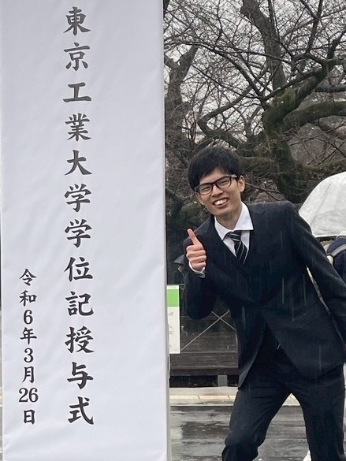

村本 玲司 (Reiji Muramoto)
Robotics Researcher / Engineer

Affiliation
東京科学大学（旧 東京工業大学）大学院 工学院 機械系 機械コース菅原研究室 博士後期課程1年
Education
2020年3月 埼玉県立川越高等学校 卒業2024年3月 東京工業大学 工学院 機械系 学士課程 卒業（当時の所属：鈴森研究室）
2026年3月 東京科学大学大学院 工学院 機械系 機械コース 修士課程 修了
Publications
東京科学大学における研究業績は こちらSkills
Experience
Contact
〒152-8550 東京都目黒区大岡山2-12-1 石川台5号館2階206号室
Mail: muramoto.r.3349 [at] m.isct.ac.jp